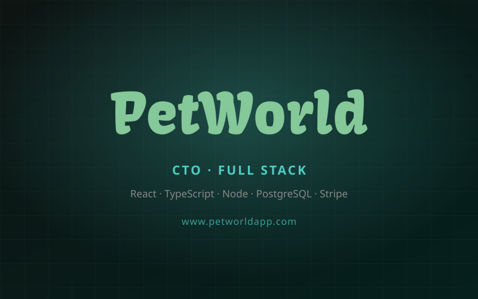
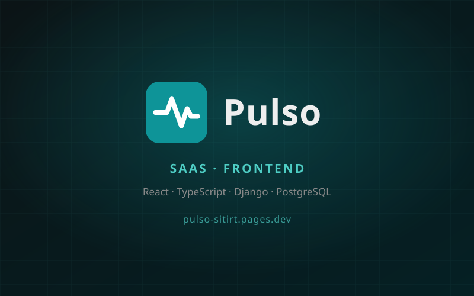
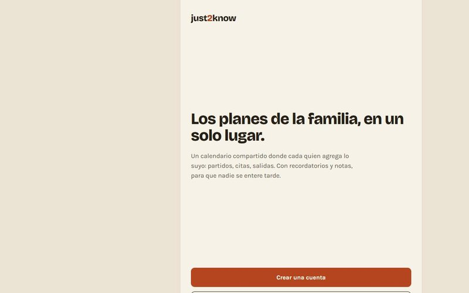
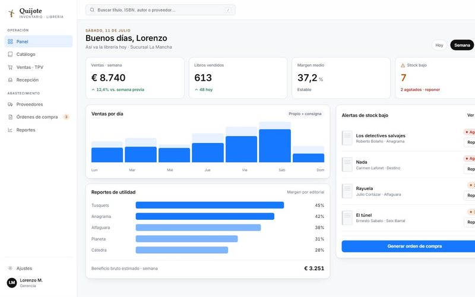

Hola, soy
Wawin
Desarrollador Full Stack · Tech Lead
Jefe de desarrollo de Petworld. Construyo productos completos —frontend, backend, base de datos e infraestructura— y los llevo hasta producción con usuarios y pagos reales.
Proyectos
Trabajo reciente en producción. Haz clic en cualquier tarjeta para ver más detalles.

Petworld
SaaS del ecosistema de mascotas. Jefe de desarrollo del stack completo: suscripciones con Stripe, límites por plan, migraciones y panel de administración.

Pulso
SaaS médico para consultorios. Lidero el frontend en un monorepo Django + React: expediente, recetas, agenda y cobros.

just2know
Producto propio: calendario familiar compartido con auth, tiempo real y suscripciones con Stripe.

WakOs Salesforce
ERP de e-learning nativo en Salesforce. Apex y Flows en el backend, React + TypeScript en el frontend.

Quijote
Inventario para librerías. Monorepo con pnpm y Turborepo, React 19 + TypeScript y estilos encapsulados.

Looking4More
App móvil de exploración y descubrimiento de contenido. Autenticación, perfil de usuario y feed dinámico.

AtomOss
App móvil con sistema de noticias, perfiles de usuario y contenido multimedia. Publicada en producción.

¿Qué está abierto?
App móvil que detecta en tiempo real qué negocios están abiertos ahora. Horarios dinámicos con PostgreSQL.

Animalotchi
Mascota virtual interactiva con sistema de cuidado, estadísticas y eventos aleatorios. Lógica de juego en JS puro.

Génesis Calasanz
Sitio institucional para club deportivo. Galería, grupos, dirigentes y contacto.

FarToFar
Sitio web personal. Uno de mis primeros proyectos — donde empezó todo.
Más proyectos
Visita mi GitHub para ver el resto del trabajo
Stack
Tecnologías con las que trabajo día a día.
Experiencia
Mi recorrido hasta aquí.
Jefe de Desarrollo — Petworld
Responsable técnico del producto completo. Reestructuré la plataforma de punta a punta: arquitectura de backend, esquema de base de datos, migración de almacenamiento, sistema de suscripciones con Stripe y refactor del frontend a TypeScript estricto. Defino las prioridades técnicas y coordino el trabajo del equipo.
ActivoFull Stack multi-producto
Trabajo simultáneo en varios productos: el frontend de Pulso (SaaS médico), la plataforma e-learning de WakOs en Salesforce y just2know, un producto propio que llevé de idea a producción con suscripciones. Segundo lugar en Talent Land México 2026 y participación en NASA Space Apps 2024 y 2025.
Primeros productos en producción
Publiqué mis primeras aplicaciones móviles con usuarios reales y entregué sistemas de punto de venta e inventario a negocios locales. Aprendí la diferencia entre código que funciona y código que se mantiene.
Inicio en programación
Primeras líneas de código: HTML, CSS y JavaScript. La curiosidad por entender cómo funcionan las cosas se convirtió en mi motor principal, y al año siguiente entré a Ingeniería en Sistemas Computacionales.
Soy Erick, ingeniero en sistemas y desarrollador full stack. Trabajo sobre el producto completo —de la interfaz a la base de datos y la infraestructura— y me interesa especialmente la parte que no se ve: el esquema de datos, las migraciones, los límites de plan, los webhooks de pago y todo lo que hace que un producto aguante usuarios reales.
Trabajo mejor donde hay autonomía, donde se itera rápido y donde el código importa tanto como el resultado final.
Contacto
¿Tienes un proyecto en mente o quieres colaborar? Escríbeme y lo platicamos.